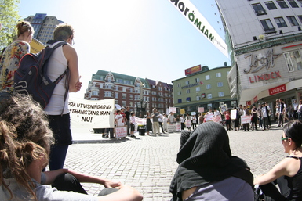

Nyheter
Vad händer med kvinnofrids- arbetet i Malmö?

Kvinnofridsarbetet ska stärkas så att det även omfattar papperslösa kvinnor. I förhandlingar med S och Mp när vi bildade majoritet i Malmö var detta en av de frågor som Vänsterpartiet drev igenom. Nu startar dialogen med...
läs mer
Asylgruppen

www.asylgruppenimalmo.orgasylgruppen@gmail.com
Initiativet till Malmö Fristad för papperslösa är taget av Asylgruppen i Malmö.
Asylgruppen i Malmö är en ideell organisation. Sedan 1991 jobbar vi med och för asylsökande och gömda flyktingar. Vi ser detta som en del av den globala kampen för frihet, jämlikhet och solidaritet. Tills denna vision förverkligats arbetar vi praktiskt för att förändra livssituationen för de som drabbas av Sveriges restriktiva flyktingpolitik.
Asylgruppen i Malmö är medlem i FARR, Flyktinggrupperna och Asylkommittéernas Riksråd. FARR är en paraplyorganisation som på riksnivå stödjer enskilda och grupper som värnar om rätten att söka asyl.
Praktiskt arbete
En viktig del av vårt arbete är direktkontakten med asylsökande och gömda flyktingar. De flesta kommer i kontakt med oss genom vår telefon, e-mail, vår jourverksamhet eller genom personer som vi tidigare mött. De personer som kontaktar oss är ofta i stort behov av hjälp och vi försöker bistå både juridiskt och humanitärt.
Detta kan innebära allt ifrån att undersöka de juridiska möjligheterna efter avslag till att ta kontakt med Migrationsverket och andra myndigheter, hjälpa till att hitta en bra advokat, se till att de som behöver får tillgång till sjukvård eller att hitta en skola som tar emot gömda barn. Det händer även att personer kommer med väskorna packade och inte vet vart de ska ta vägen. När möjlighet finns ger vi ekonomisk hjälp till hyra, advokatkostnader, mediciner, mat och andra livsnödvändigheter.
Politiskt arbete
Det politiska arbetet är en central del i vår verksamhet, men vi är både religiöst och partipolitiskt obundna. Genom opinionsbildning och utbildning verkar vi för en human och generös flyktingpolitik – en politik där varje människa får en värdig behandling och där rättssäkerhet även gäller asylsökande.
Vi är med i kampen för ett samhälle där politiken präglas av idén om allas lika värde. Ett samhälle där ingen exkluderas eller diskrimineras och där de mänskliga rättigheterna inte är vision utan realitet. Utöver vårt direkta arbete med flyktingar verkar vi för detta bland annat genom att skriva artiklar, hålla föredrag, delta i debatter och organisera demonstrationer. Bara fantasin sätter gränser för hur man kan nå ut.
De människoöden vi möter är inte resultatet av Migrationsverkets enstaka misstag, utan av en systematiskt uteslutande flyktingpolitik. Asylsökande ifrågasätts, misstänkliggörs och kränks av svenska myndigheter. Internationella konventioner som Sverige har ratificerat följs inte och grova kränkningar av asylrätten förekommer. Många flyktingar som Sverige skickar tillbaka försvinner spårlöst, fängslas, torteras eller dödas. Sverige är det land som flest gånger prickats av FN för att ha skickat människor till länder där de riskerat tortyr.
Svensk flyktingpolitik skapar gömda flyktingar – det är upp till oss att bestämma hur begränsade deras liv måste vara.
Malmö för alla
I Malmö lever många personer som saknar uppehållstillstånd och därför får sina liv begränsade på olika sätt i vardagen. Att personer som inte fått uppehållstillstånd väljer att stanna i Sverige istället för att låta sig utvisas gör inte att deras behov och drömmar skiljer sig från andras. Vi vill att alla Malmöbor ska ha tillgång till det som staden har att erbjuda. Därför är vi med och erbjuder en fristad för papperslösa!
Anslut er
ChecklistaGoda Exempel
Gå med